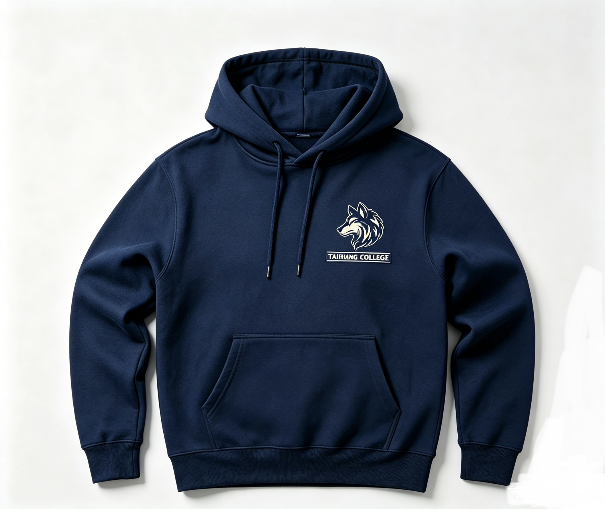

TAIHANG HOUSE / THE FINAL THREE
Made for
Taihang.
Our house. Our colours. Our next jacket.
Three student designs. One house decision.

DESIGNED BY USCHOSEN BY USA HOUSE WE’RE PROUD TO WEAR.
THE SHORTLIST
Find your fit.
Explore each design in order. Switch between views, open the artwork and look at the details. Then choose the one you’d want to wear.
One vote for every student and teacher. Use your private code from Mr. Rooker. Names and classes stay off the ballot. Final production details follow the vote.
THE FINAL SAY IS YOURS
Wear your
house pride.
Checking voting…
Results stay private while voting is open. Mr. Rooker will announce the outcome after voting closes. If there is a tie, we’ll hold a runoff.
Need a code or having trouble?
brooker@rdfzcygj.cn
VOTE RECEIVED
Thank you,
Taihang.
Your receipt